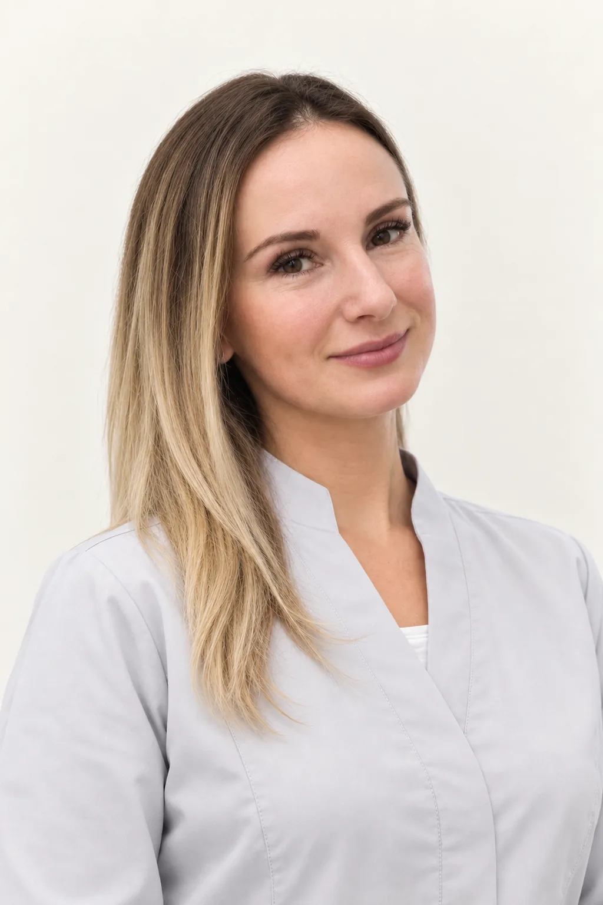
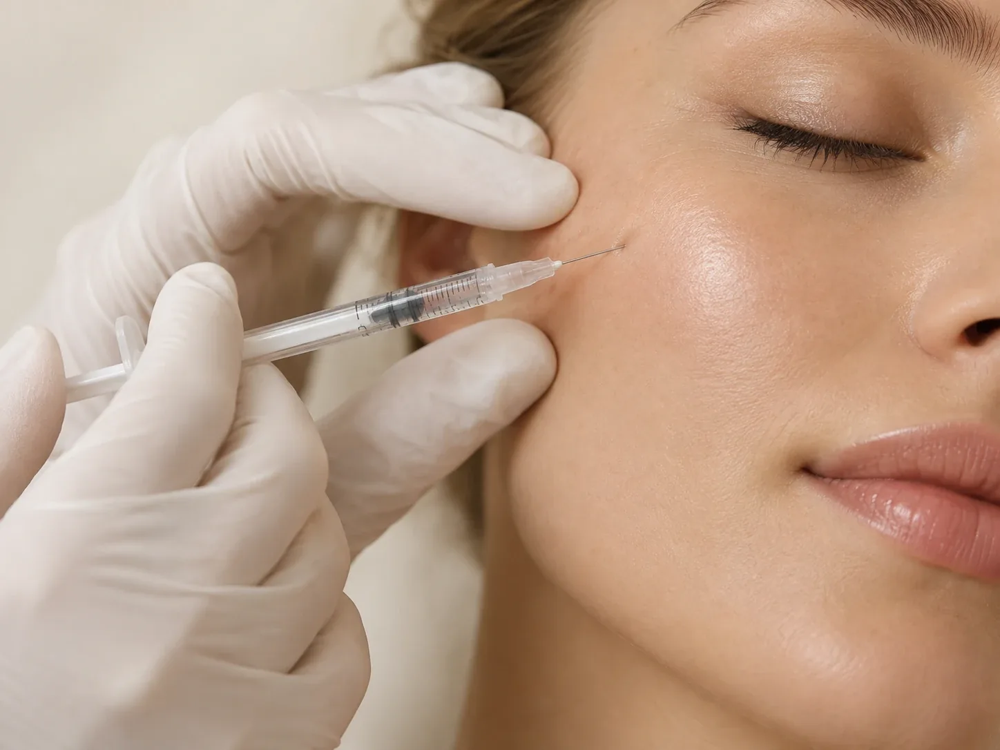

БояринцеваЮлия Игоревна
Врач-дерматовенеролог-косметолог
Диагностика и лечение заболеваний кожи, практическая, клиническая и аппаратная косметология
- Опыт
- 17 лет
Кожа и внешность
Увлажнение и качество кожи: инъекции на основе гиалуроновой кислоты по назначению врача.
Биоревитализацию и биоармирование проводит врач-косметолог. Он оценивает кожу, подбирает препарат, зону и схему курса. Консультация перед процедурой бесплатная.

Биоревитализация – это инъекции препаратов на основе гиалуроновой кислоты в кожу, чтобы восполнить её увлажнённость и улучшить качество. Биоревитализацию лица, шеи и декольте проводит врач-косметолог клиники 8.0.8 в Москве, у метро «Римская». Записаться можно ежедневно с 9:00 до 21:00.
Её назначают при сухости и обезвоженности, тусклом цвете лица, снижении упругости и мелких морщинах, а также для подготовки кожи к другим процедурам и восстановления после них.
Препараты различаются составом: чистая гиалуроновая кислота, гиалуроновая кислота с аминокислотами, полинуклеотиды. Какой подходит, сколько процедур нужно и с каким интервалом, врач решает после осмотра.
Врач расскажет:
Гиалуроновая кислота есть в коже сама по себе: она удерживает воду и помогает коже оставаться упругой. С возрастом, от солнца, стресса и сухого воздуха её становится меньше, и кожа быстрее теряет влагу.
При биоревитализации препарат гиалуроновой кислоты вводят в кожу небольшими порциями, через множество микроинъекций. Препарат жидкий, он распределяется в коже и не меняет черты лица. Этим биоревитализация отличается от контурной пластики, где плотный гель восполняет объём.
Лицо после биоревитализации обычно выглядит так: в местах уколов маленькие бугорки, лёгкое покраснение, иногда синяки. Бугорки проходят сами за один-два дня, а синяки за несколько дней. Изменения качества кожи развиваются постепенно.
Обе процедуры делают инъекциями в кожу, и их часто путают. Главное различие в том, что вводят и зачем.
Процедуры можно сочетать. Что подходит вам и в каком порядке, врач скажет после осмотра.
PDRN (ПДРН) расшифровывается как полидезоксирибонуклеотид: это очищенные фрагменты ДНК. Чаще всего их получают из молок лососевых рыб. К близкой группе относятся полинуклеотиды, у них более длинные цепочки.
В косметологии такие препараты используют, когда коже нужна не только влага, но и поддержка восстановления: при тонкой, уставшей коже, после пилингов и аппаратных процедур. Их ещё называют биорепарантами.
В 8.0.8 полинуклеотиды есть среди препаратов для биоревитализации (2 мл за 24 500 ₽), а PDRN входит в один из коктейлей для мезотерапии (5 700 ₽ за процедуру, курс из трёх за 15 390 ₽). Если у вас была аллергия на рыбу или морепродукты, скажите об этом врачу заранее.
Обычно биоревитализацию проводят курсом из нескольких процедур с интервалом в несколько недель. Одна процедура тоже возможна, например перед отпуском или после пилинга, но курс даёт коже больше времени на изменения.
Сколько держится результат, заранее точно сказать нельзя. Введённая гиалуроновая кислота постепенно расходуется, а на кожу влияют возраст, солнце, сон, питание и уход. Поэтому через некоторое время процедуры повторяют как поддерживающие. Как часто делать биоревитализацию именно вам, врач решит по состоянию кожи.
Стоимость зависит от препарата и объёма. Консультация врача перед процедурой бесплатная.
Все цены
Врач-дерматовенеролог-косметолог
Диагностика и лечение заболеваний кожи, практическая, клиническая и аппаратная косметология
Биоревитализация препаратом гиалуроновой кислоты 1,1 мл стоит от 14 500 ₽. Препараты объёмом 2–3 мл стоят от 21 000 до 29 800 ₽. Обезболивающий крем стоит от 600 ₽ за зону.
По телефону +7 (938) 099-30-09, ежедневно с 9:00 до 21:00.
В клинике 8.0.8: ул. Сергия Радонежского, 15–17, стр. 2, этаж 1. Рядом станции метро «Римская» и «Площадь Ильича».
Это инъекции препаратов на основе гиалуроновой кислоты в кожу, чтобы восполнить её увлажнённость. Препарат и схему подбирает врач-косметолог.
Для биоревитализации используют препараты на основе гиалуроновой кислоты, а для мезотерапии коктейли из витаминов, аминокислот и других веществ. Что подходит вам, решит врач.
Это полидезоксирибонуклеотид, очищенные фрагменты ДНК. Препараты с PDRN и полинуклеотидами используют для поддержки восстановления кожи. Подходят ли они вам, врач скажет на консультации.
Обычно назначают курс из нескольких процедур с интервалом в несколько недель, затем поддерживающие процедуры. Точную схему врач назовёт после осмотра.
Это индивидуально: зависит от препарата, возраста, состояния кожи и образа жизни. Врач расскажет, когда стоит повторить процедуру.
В первые дни не трогайте зону руками, не наносите макияж в день процедуры, откажитесь от бани, сауны, бассейна, интенсивного спорта и загара. Точные рекомендации даст врач.
Перед процедурой на кожу наносят обезболивающий крем.
Имеются противопоказания. Необходима консультация специалиста.